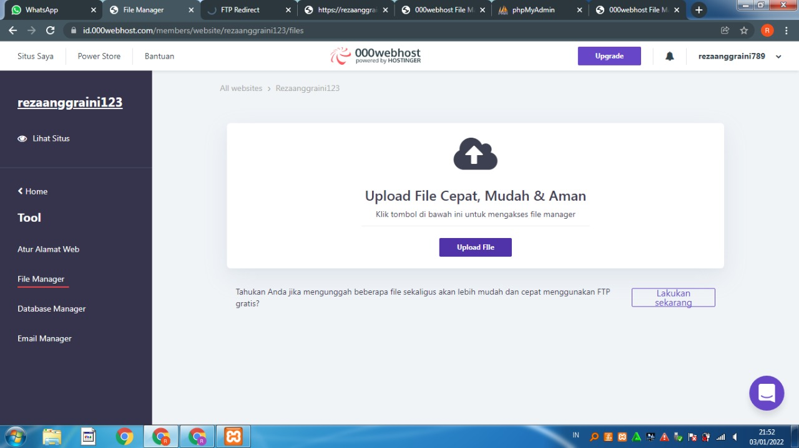
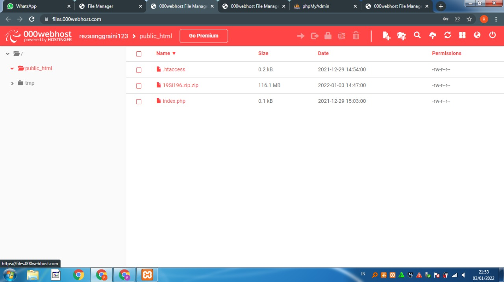
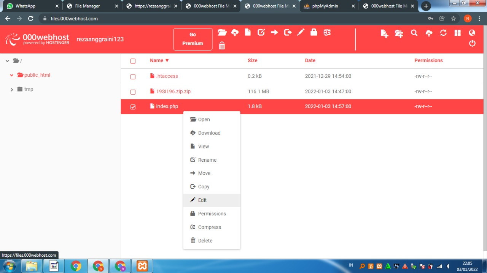
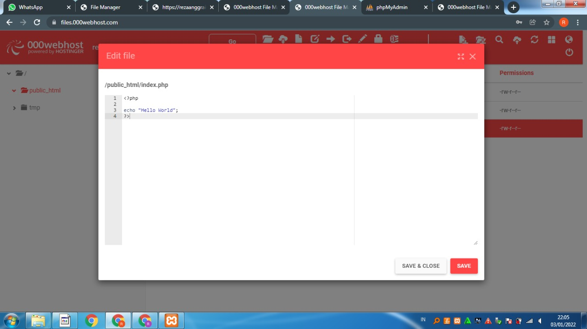
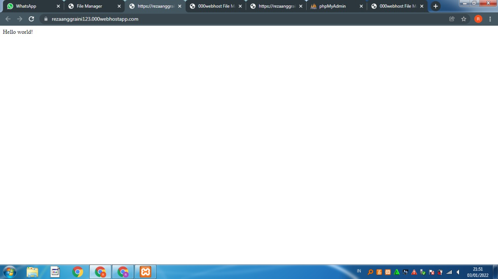
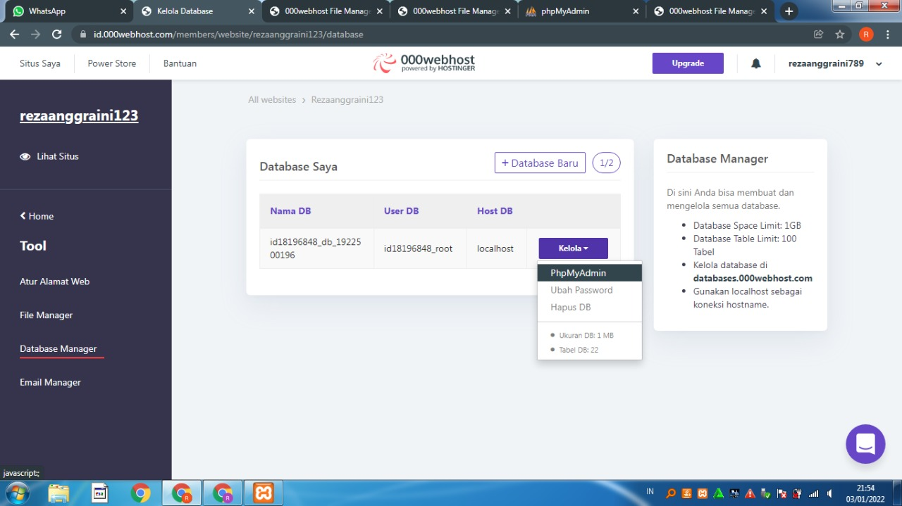
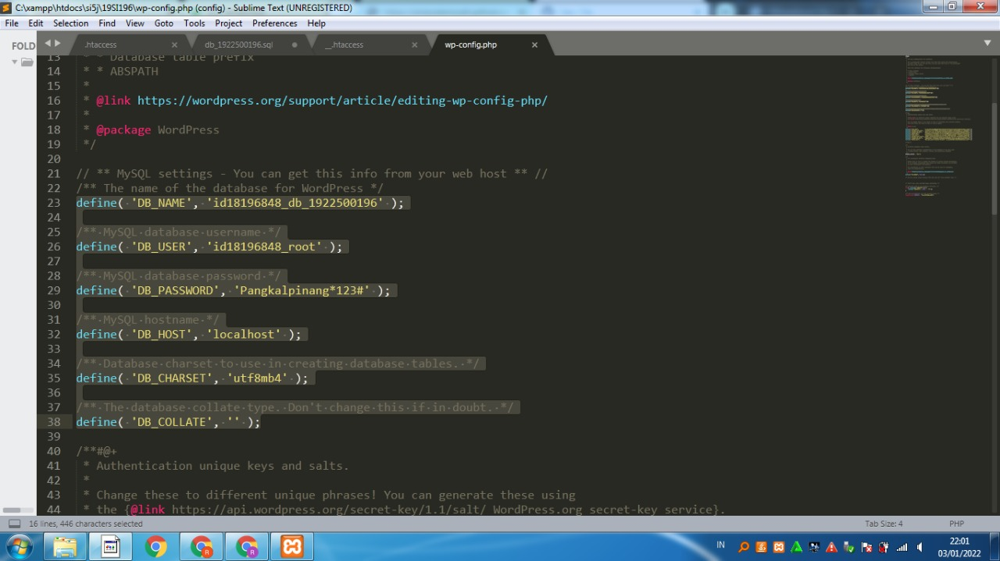
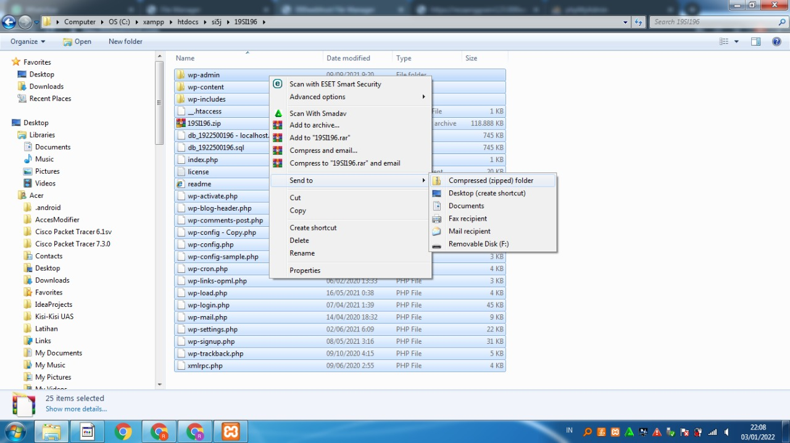
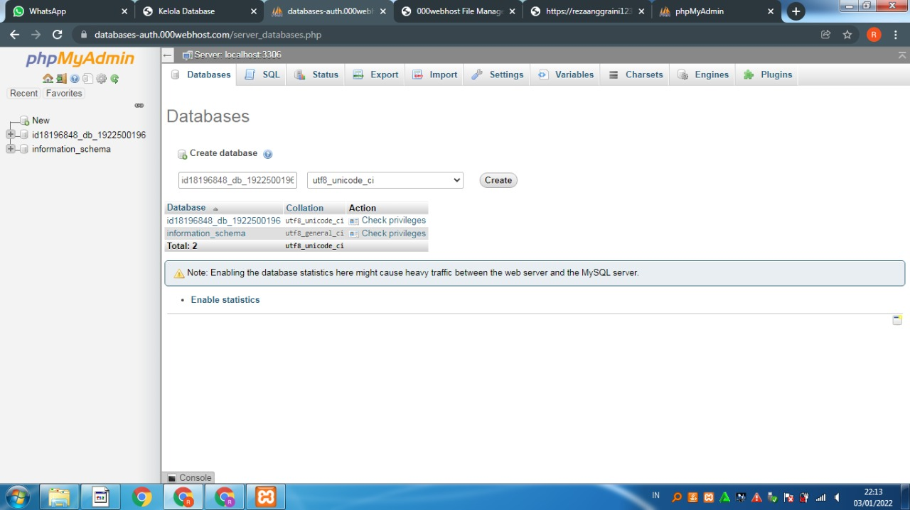

NIM = 1922500196
Nama = Reza Anggraini
Kelompok = SI5J
Pada pertemuan 9 Mata Kuliah Rekayasa Web membahas materi mengenai :
- Dipertemuan ke 9, kami mencoba untuk membuat atau daftar hosting
- Cara pertama buka halaman web https://id.000webhost.com/target="_blank">https://id.000webhost.com/
- setelah itu tentukan nama hosting dan pasword nya sesuai yang kita mau
- Setelah membuat atau mendaftar hosting yang telah kita buat kita mengklik link copy link hosting yang kita buat
- sesudah itu kita akan menuju link web kita klik tool/file manager setelah itu akan muncul upload file
- lalu kita buat index.php lalu kita edit dicodingan tersebut dengan tulisan Hello world/hello dunia
- kemudian kita bisa memidahkan file woodpress kita tersebut ke hosting yang kita buat dengan mengubah di sql nya dll
- 1) setelah itu kita zip file woodpress yang sudah kita ubah lalu klik upluad file kita ke hosting yang kita buat
- 2) Langkah terakhir upload file yang sudah dizip tadi ke dalam public_html yang ada pada hosting
Berikut tampilan hasil dari pertemuan 9:








